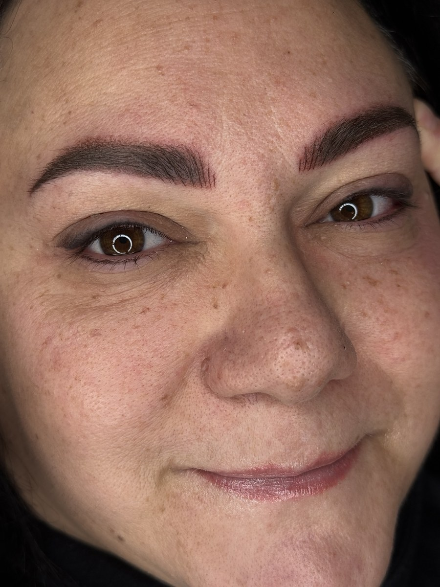
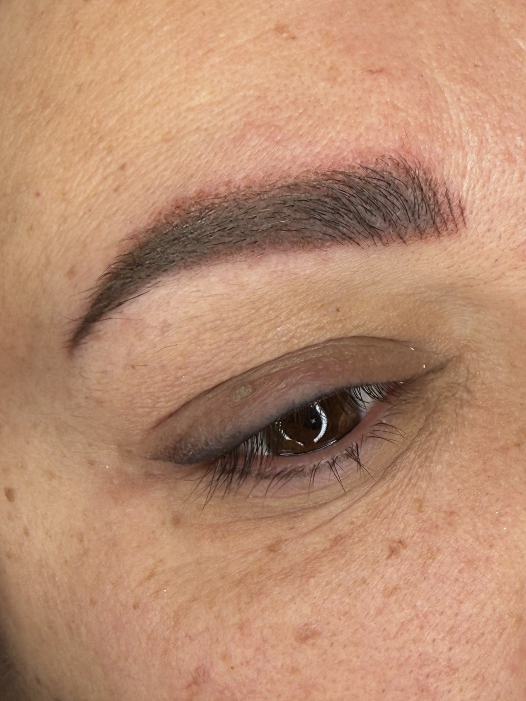
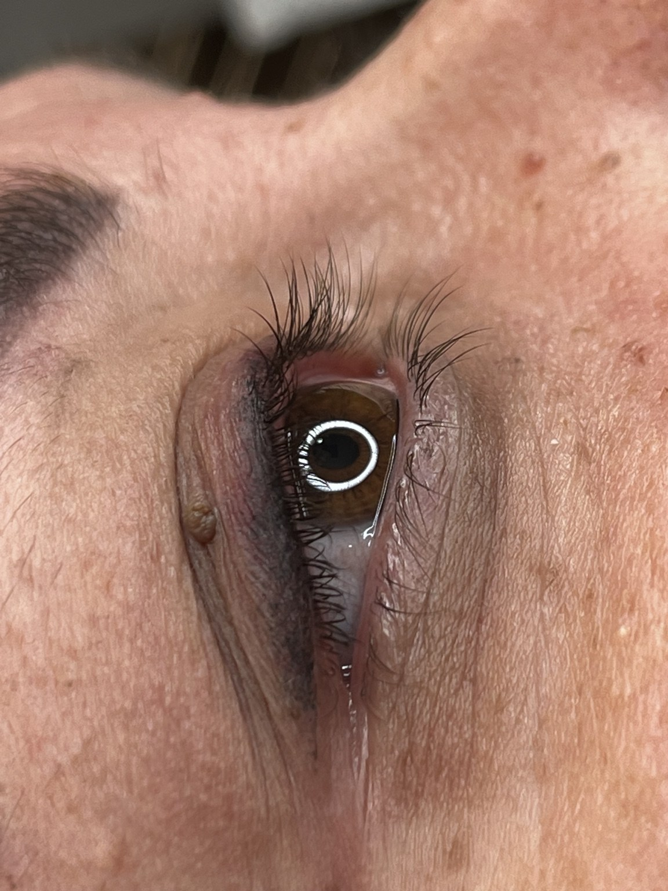
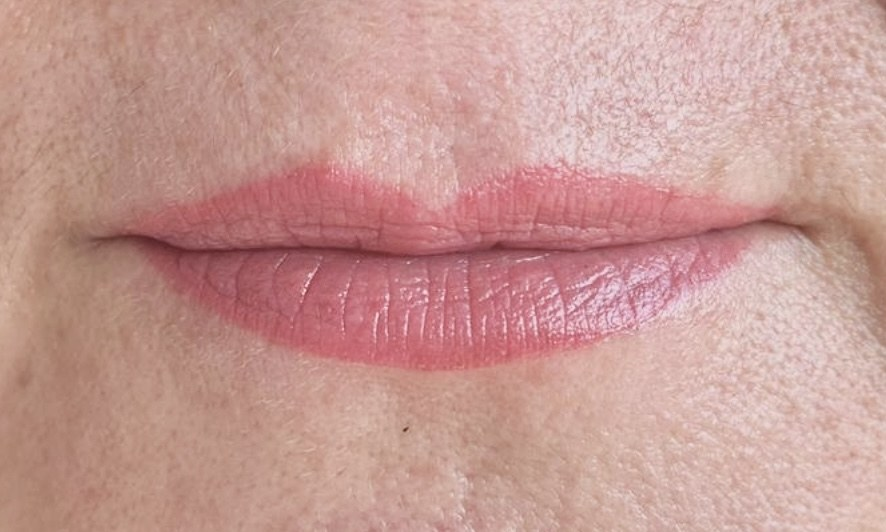
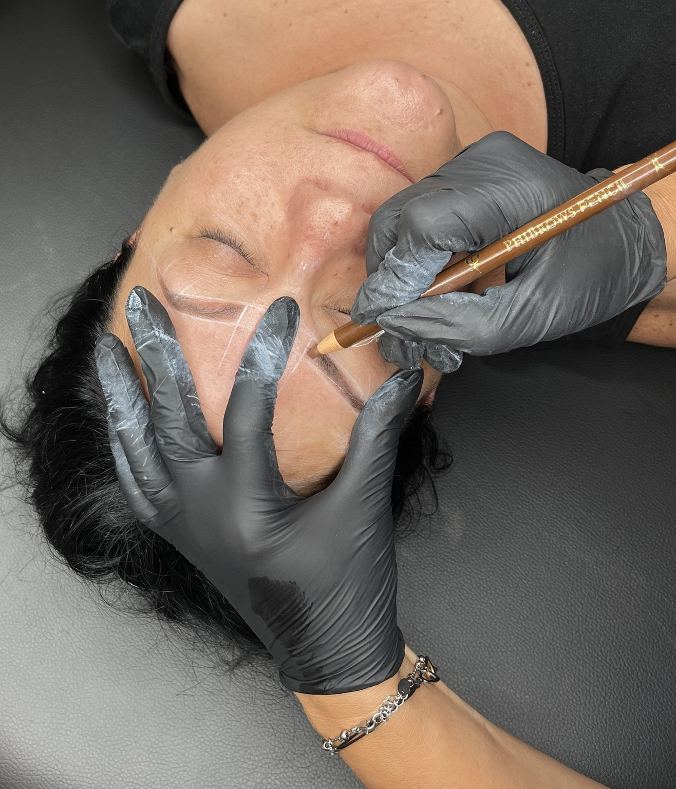
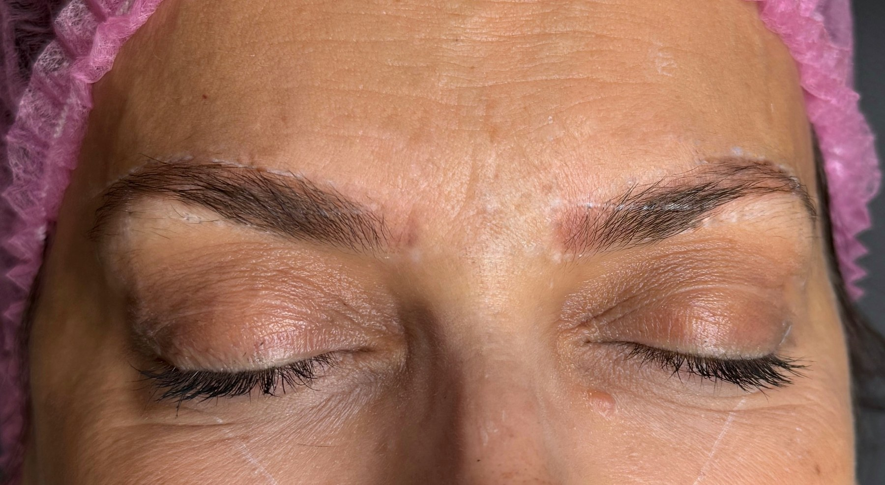
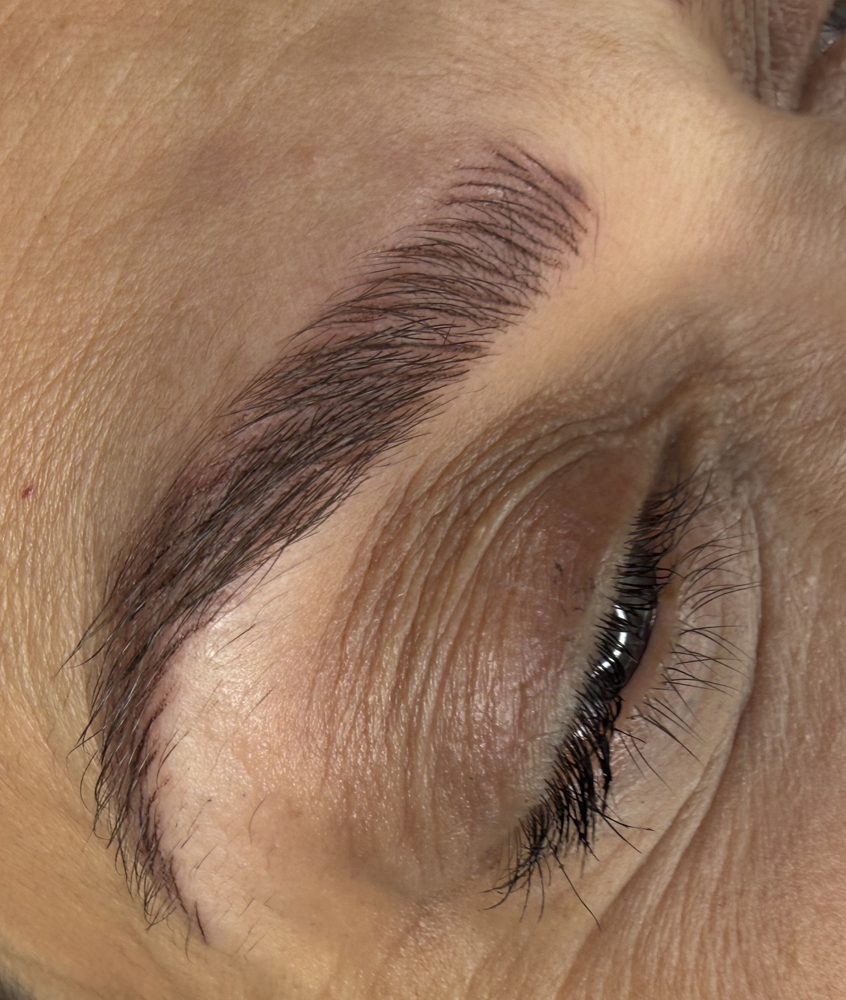
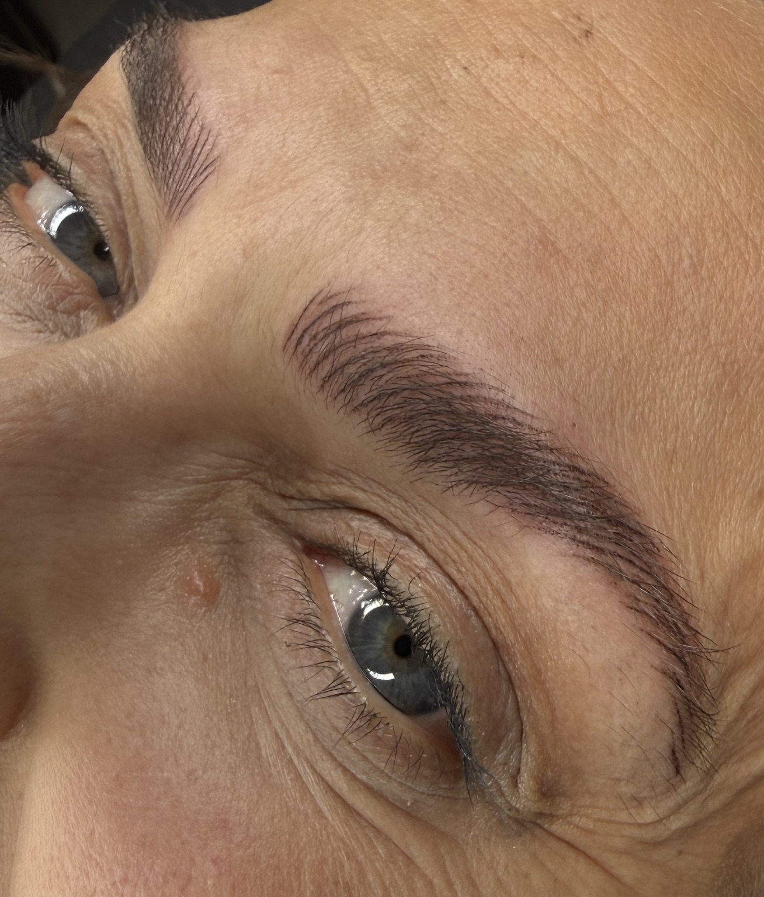
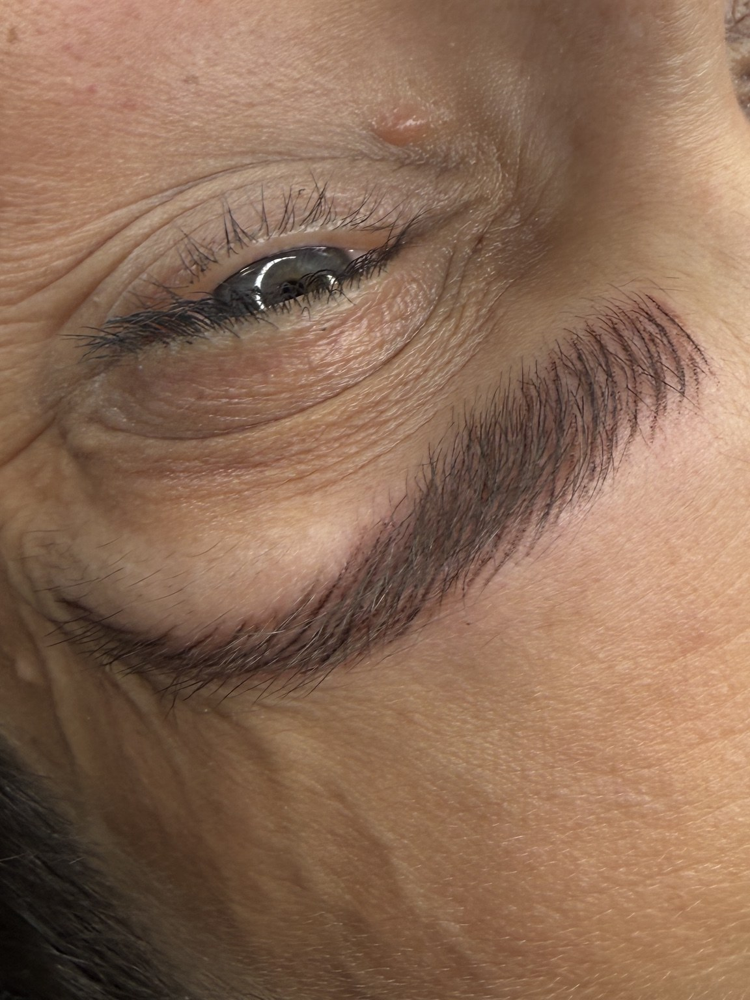
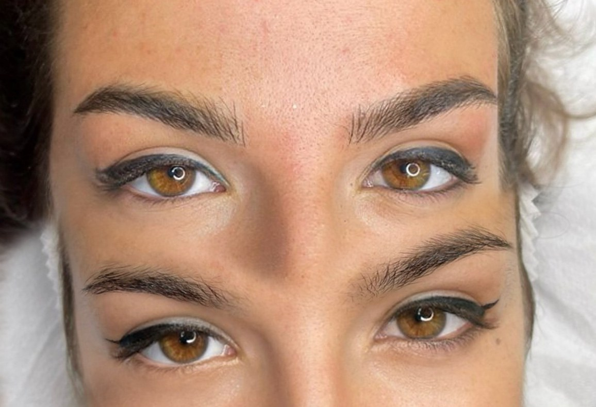

Full face
Lavoro completo su viso: dettagli per zona.

PMU
La dermopigmentazione (PMU, permanent make-up) deposita pigmenti negli strati superficiali della pelle del viso per ridisegnare o valorizzare sopracciglia, labbra e occhi. Il risultato è semipermanente: il colore si attenua nel tempo e può richiedere ritocchi. Ogni protocollo è disegnato sulla forma e sulle caratteristiche della persona.
Prenota una consulenzaUnisce due tecniche: tratti sottili a effetto pelo, soprattutto nella parte iniziale del sopracciglio, e sfumatura nel resto. Adatto a chi ha sopracciglia rade, irregolari o con zone vuote, perché dà struttura e naturalezza insieme.
Tratti sottili che imitano l'andamento dei peli, per ricreare visivamente la presenza di peli e una forma più definita. Il risultato ha un aspetto molto naturale da vicino.
Sfumatura morbida e modulabile, che ricorda un delicato effetto ombretto sulle sopracciglia. L'intensità si sceglie in base al gusto e al viso, da molto leggera a più presente.
Colore pieno e uniforme su tutta la superficie delle labbra, con più presenza cromatica e un contorno ben definito. Indicato a chi desidera un effetto più marcato.
Il contorno è più definito e il colore sfuma progressivamente verso l'interno, per un effetto più naturale e graduale rispetto a un colore pieno.
Effetto naturale simile a un burrocacao colorato: un tono delicato e uniforme che ridefinisce con discrezione contorno e uniformità, senza un effetto marcato.
Una linea alla base delle ciglia inferiori o superiori con una piccola estensione sfumata, che definisce lo sguardo senza l'effetto grafico di un eyeliner classico.
Linea sottile, concentrata alla base delle ciglia, che le fa apparire più folte e dà profondità allo sguardo con un effetto molto discreto.
Lavoro completo su viso: dettagli per zona.





Ridefinizione del contorno.


Prima e dopo.
Line Brows.




Prima e dopo.


Infracigliare.



Evitare eccesso d'acqua iniziale, make-up e prodotti esfolianti sulla zona fino alla guarigione; non rimuovere forzatamente le desquamazioni.
In caso di storia di herpes labiale parlarne con il medico prima del trattamento, per valutare un'eventuale profilassi.
Nei primi giorni evitare trucco sulla zona, detergenti aggressivi, struccanti oleosi e sfregamento.